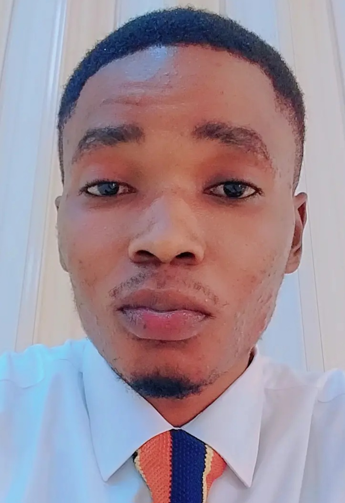

Ansu Tommy | WDD 130
My name is Ansu Tommy, and I am a student currently studying Web Development. I have a deep interest in technology and enjoy learning how websites and applications are built to connect people and share information globally. Through my studies, I am gaining skills in HTML, CSS, JavaScript, and other modern tools that will help me design, develop, and maintain responsive and user-friendly websites. I come from Sierra Leone, a beautiful country in West Africa with a rich cultural history and strong traditions of resilience. Known as the "Lion Mountain," Sierra Leone is a land of diverse ethnic groups, languages, and natural beauty—from its beaches and mountains to its vibrant communities. Growing up in Sierra Leone has shaped my perspective and inspired me to use technology as a way to contribute positively to society, create opportunities, and showcase the talents of my country to the wider world.
...